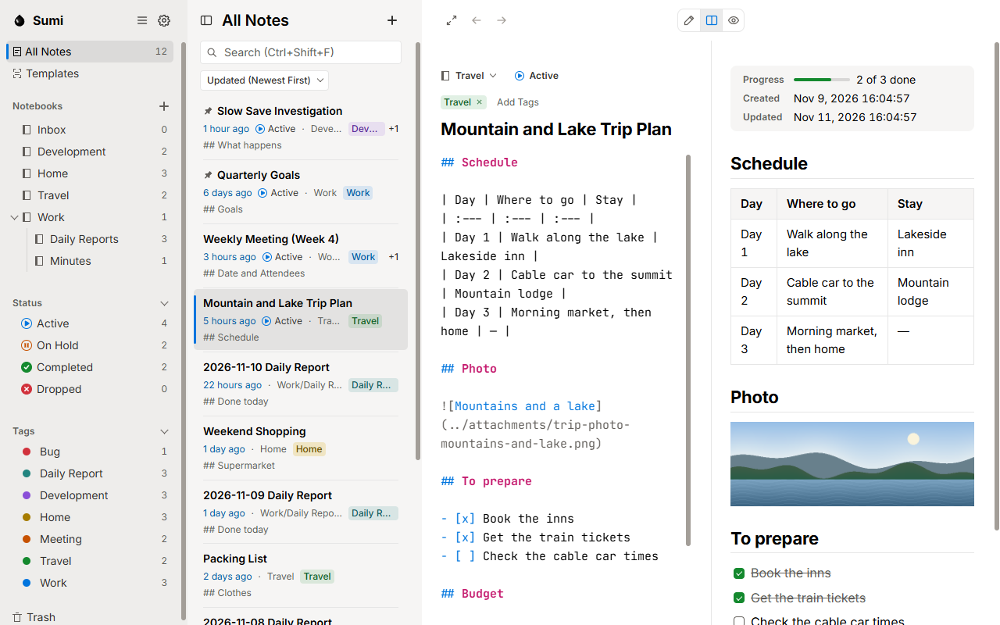
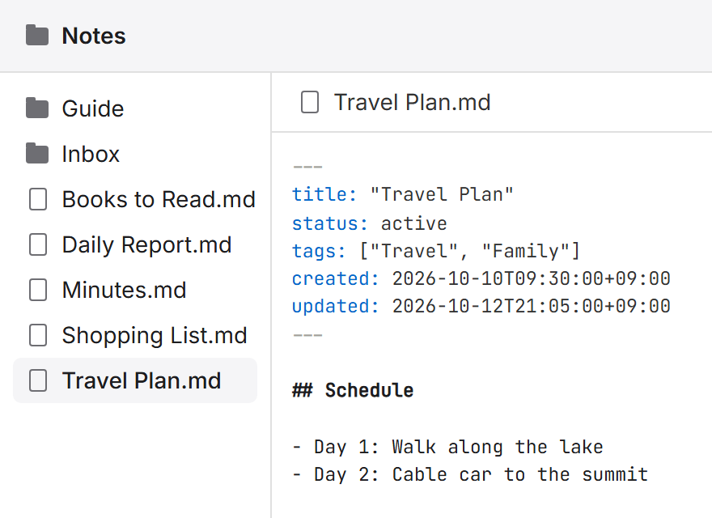
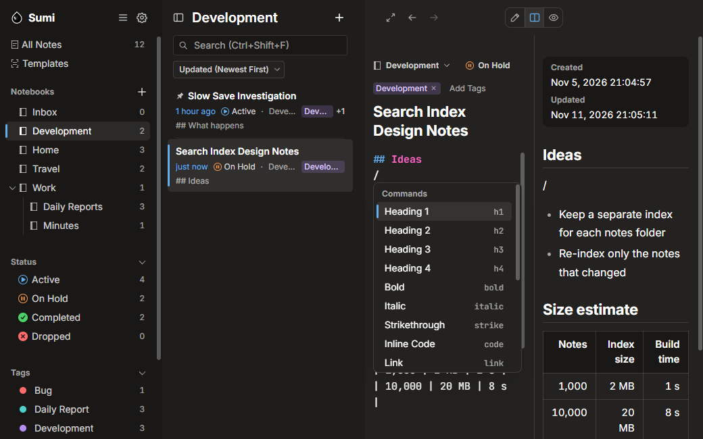
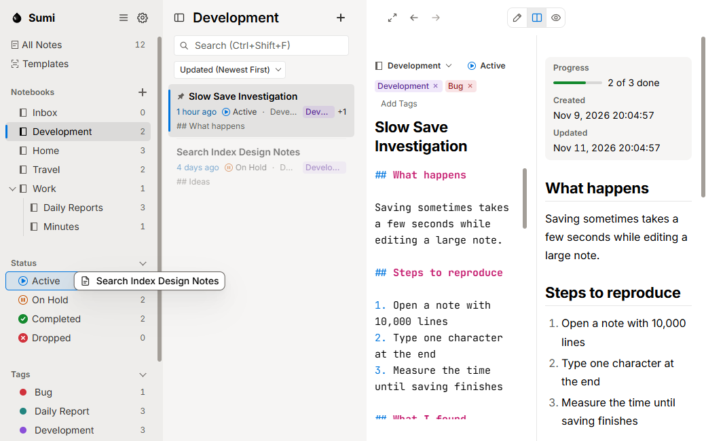
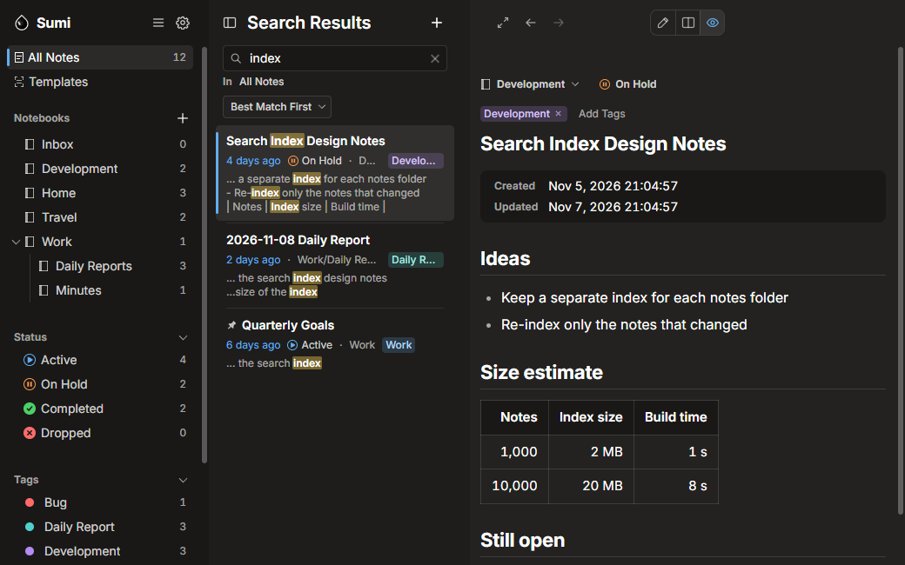
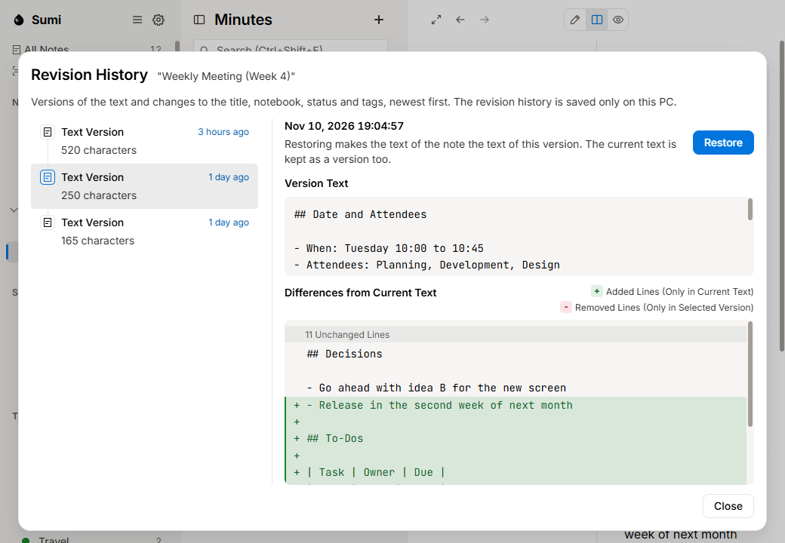
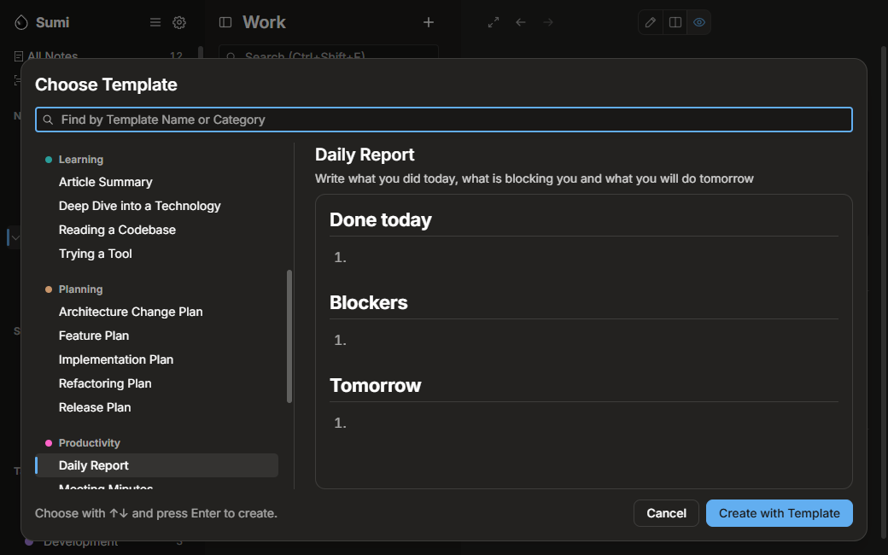
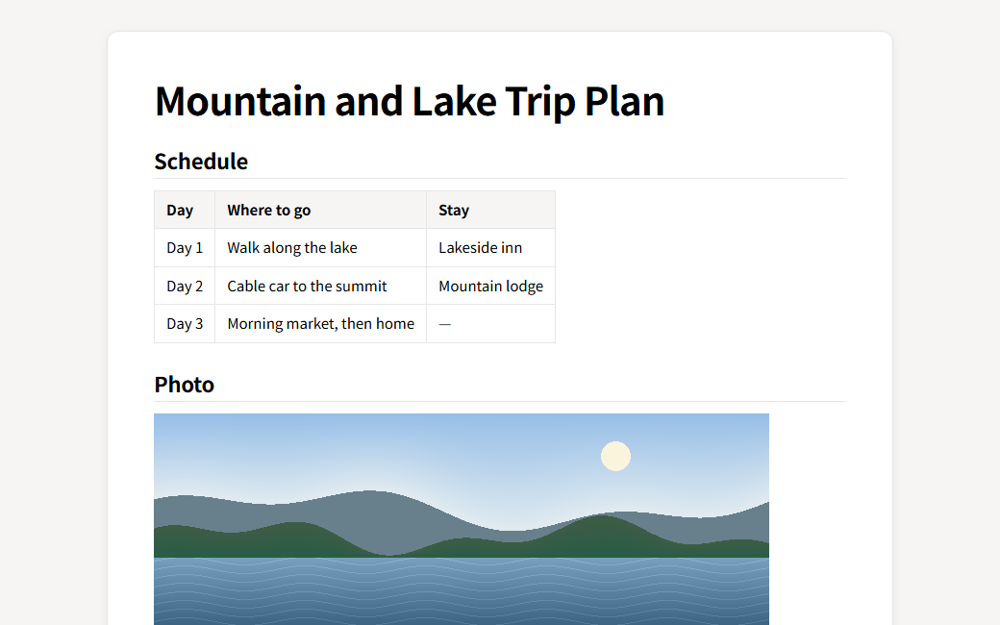
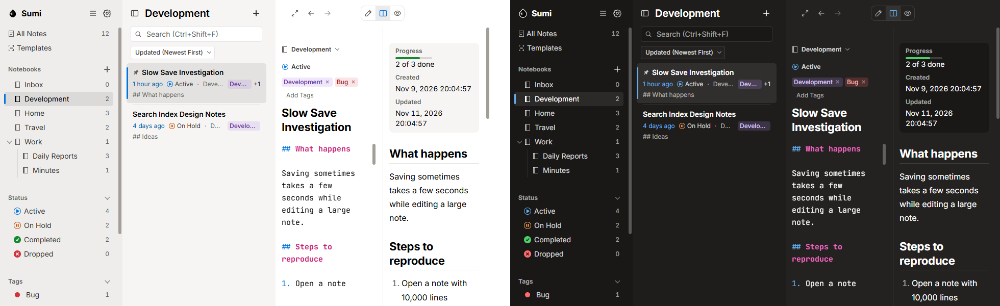

Save and Organize Without Second-Guessing
Always know where your notes are. Sumi Notes is a note app for Windows that saves what you write automatically and keeps it as Markdown files (.md) in a folder you choose. There is nothing to save by hand. Organize notes with notebooks, statuses and tags, and find them quickly with full-text search.

- For Windows
- Free
- Saved as Markdown Files (.md)
- Works Offline
Notes Stay Close at Hand as Markdown Files

-
One File per Note, Saved Where You Choose
Each note is saved as its own Markdown file (.md) in the "notes folder" you choose. Notebooks are folders inside that folder.
-
Opens in Other Apps
Notepad and other editors can open your notes as they are. Changes made in another editor show up in Sumi Notes too.
-
Notes Stay After Uninstalling
Uninstalling the app does not delete the notes folder or the notes in it.
-
No Account Needed
Start right away, without signing up or signing in.
-
Works Offline
You can write, organize and find notes without an internet connection.
-
Notes Are Never Sent Anywhere
Sumi Notes does not send information about you or the contents of your notes anywhere. There is no usage tracking and no advertising. For details, see the Privacy Policy.
Focus on Writing

-
Monospaced Editor with Syntax Coloring
The editor uses a monospaced font and colors Markdown syntax such as headings, lists and code. Lists and quotes continue on the next line when you press Enter.
-
Editor and Preview Side by Side
See the result in the preview on the right as you write. The two sides scroll together. You can also switch to the editor only or the preview only.
-
Type "/" to Choose Formatting
Type "/" on an empty line to see 18 kinds of formatting, such as headings, tables, task lists and code blocks. Choose one to insert its Markdown.
-
Toolbar for Selected Text
Select text to show buttons for headings, bold, links, lists and more.
-
Focus Mode
Hide the sidebar and the note list, and give the whole window to the editor.
-
Paste or Drop Images to Attach
Paste an image or drop it on the editor. It is saved in the notes folder and inserted into the note.
-
Colored Code Blocks with Copy Button
Code blocks are colored for each language, and the button at the top right copies the code.
Stay Organized as Notes Pile Up

-
Nested Notebooks
Create notebooks inside notebooks. Drag them in the sidebar to reorder them or to put one inside another.
-
Page for Each Notebook
Open a notebook, and the sidebar becomes a page for that notebook alone, showing the notebooks, statuses and tags inside it and how many notes each has.
-
Statuses (Active, On Hold, Completed, Dropped)
Give notes one of four statuses and filter by status. Notes marked Completed or Dropped are hidden from the list automatically.
-
Tags with Colors
Add several tags to a note. Give tags colors, and filter notes by tag.
-
Pin Notes You Use Often
Pinned notes stay at the top of the list.
-
Drag to Move Notes or Set Status and Tags
Drag a note from the note list to the sidebar to move it to a notebook, set its status, add a tag or move it to the trash.
Find What You Wrote Right Away

-
Search Every Note Instantly
Full-text search looks through all your notes and finds partial matches from a single character, so results show up as you type. It treats uppercase and lowercase letters as the same and highlights the words it finds in the list.
-
Best Matches First
Search results are sorted with the best matches first. You can also search only inside the notebook or tag selected in the sidebar.
-
Find and Replace in Open Note
Find and replace words in the note you have open. Regular expressions are supported.
-
Link Notes with "[["
Type "[[" to see the titles of other notes and insert a link. Links keep working when you rename the linked note or move it to another notebook.
-
List of Linking Notes (Backlinks)
In a linked note, see a list of the notes that link to it.
Bring Back What You Deleted or Changed

-
Automatic Saving as You Type
There is nothing to save by hand. What you type is saved to the file automatically.
-
Compare and Restore Versions in Revision History
Each time you stop typing, a version of the text is kept in the revision history. See the differences from an earlier version, and restore it.
-
Restore Deleted Notes from Trash
Deleted notes go to the trash. Restore them later, choosing the notebook to put them back in.
-
Pick Up Where You Left Off
When you start the app again, the open note, the cursor and scroll positions and the search words come back as they were.
Start Writing Today

-
29 Templates
Sumi Notes comes with 29 templates, such as Daily Report, Meeting Minutes, Travel Plan and Bug Fix. Press Ctrl+T to choose one and create a note.
-
Use Custom Templates Too
Put notes into the "Templates" folder to use them as your own templates.
-
Five Notes on Getting Started
Start with a folder that has no notes, and five notes on how to use the app are added. They show how to write Markdown and examples of use.
-
Use Existing Folders of Markdown Files
Use a folder of Markdown files (.md) you already have as your notes folder, just as it is.
Get Around Quickly by Keyboard
-
Common Shortcuts
Keys Action Ctrl+N Create New Note Ctrl+T Create Note from Template Ctrl+Shift+F Search Notes (Go to Search Field Above List) Ctrl+E Switch Between Editor Only and Preview Only Ctrl+P Show Side by Side (Press Again to Go Back) Ctrl+Shift+D Enter or Exit Focus Mode Ctrl+\ Hide or Show Sidebar Alt+←/Alt+→ Go Back to Previous Note / Go Forward to Next Note Shift+Alt+1to5 Set Status to "None", "Active", "On Hold", "Completed" or "Dropped" Ctrl+Shift+P Print Open Note M Move to Notebook (With Note Selected in Note List) P Pin or Unpin (With Note Selected in Note List) Ctrl+D Duplicate Note (With Note Selected in Note List) Delete Move to Trash (With Note Selected in Note List) -
All Shortcuts in Help
You can see every shortcut in "Keyboard Shortcuts" in the app's "Help" menu.
Share Notes in Other Formats

-
HTML (One File with Images Embedded)
Export a note as a single HTML file with its images embedded. That one file can be read in a browser on another PC.
-
PDF (A4)
Export an A4 PDF that looks just like the preview.
-
Markdown (with Images)
Export a Markdown file (.md), together with the images pasted into the note.
-
Print
Print notes from the Windows print screen.
-
Copy as HTML
Copy a note as HTML and paste it into other apps.
Made for Light and Dark

-
Light, Dark or Match Windows
Choose from three themes: Light, Dark, and Use OS Setting, which follows the Windows setting.
-
Fonts Included
The fonts the app uses (Inter, Noto Sans JP and JetBrains Mono) come with it, so text looks the same on any PC, whatever fonts are installed.
-
Adjustable Text Size
Press Ctrl++ and Ctrl+- to make the text of the editor and the preview larger or smaller. Press Ctrl+0 to go back to the original size.
Frequently Asked Questions
Is it free?
Yes, it is free. It shows no ads either.
Do I need an account?
No. You can use it without signing up or signing in.
Where are my notes saved?
In the "notes folder" you choose, as Markdown files (.md). Settings such as the theme, the search index and the revision history are saved in the app's own storage on that PC.
Can I open my notes in other apps?
Yes. Changes made in other apps show up in Sumi Notes too.
Does it work without an internet connection?
Yes. Sumi Notes connects to the internet only to show images from the web that a note refers to, and to open a link in a note in your browser when you click it.
Is there a sync feature or a smartphone app?
There is no sync feature and no smartphone app. You can put the notes folder inside the folder of a sync service such as OneDrive. In that case, the files are handled under the terms of that sync service.
If I uninstall the app, are my notes deleted?
No. Uninstalling the app leaves the notes folder and the notes in it as they are.
Which versions of Windows does it run on?
Windows 10 (version 2004 or later) or Windows 11, 64-bit (x64). It does not run on Mac or smartphones.
Notes Stay Yours, Always
Sumi Notes does not collect any information about you and sends nothing anywhere. It works without an internet connection.
Get from Microsoft StoreHow to Get Sumi Notes
Sumi Notes is free on Microsoft Store. Click "Get from Microsoft Store" to open the Sumi Notes page on Microsoft Store. You can also find it by searching for "Sumi Notes" in the Microsoft Store app.
- Store
- Microsoft Store
- Price
- Free
- Supported OS
- Windows 10 (version 2004 or later) or Windows 1164-bit (x64)
- Account
- No Sign-Up Needed